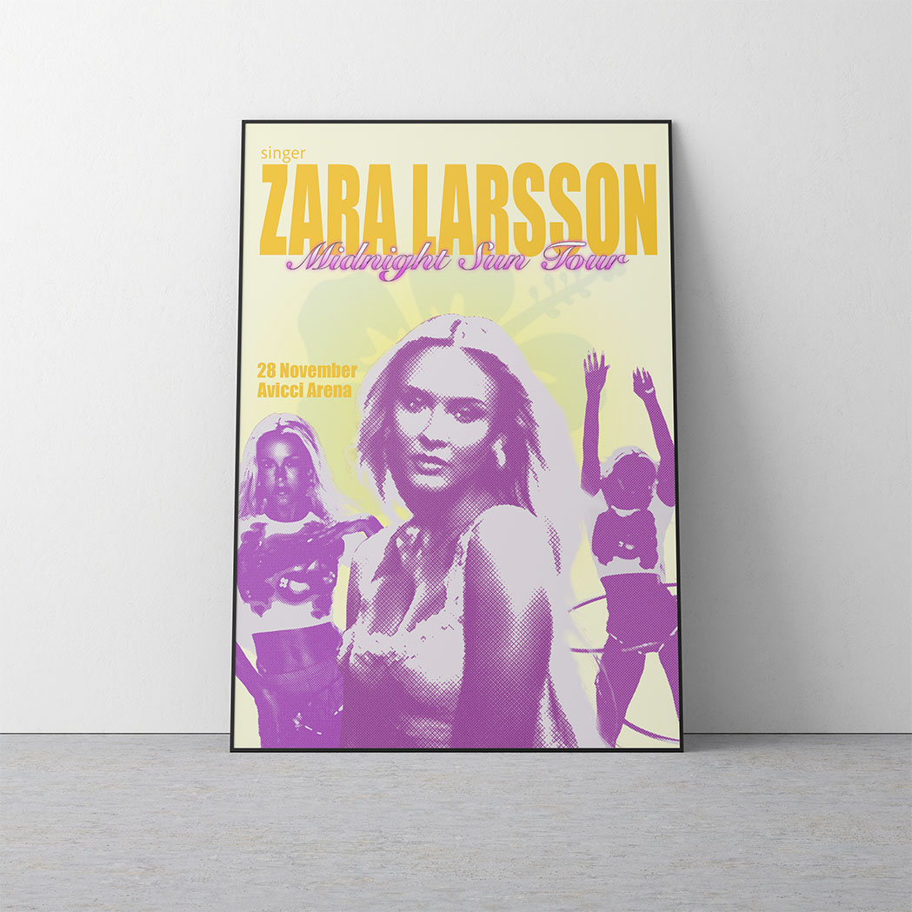
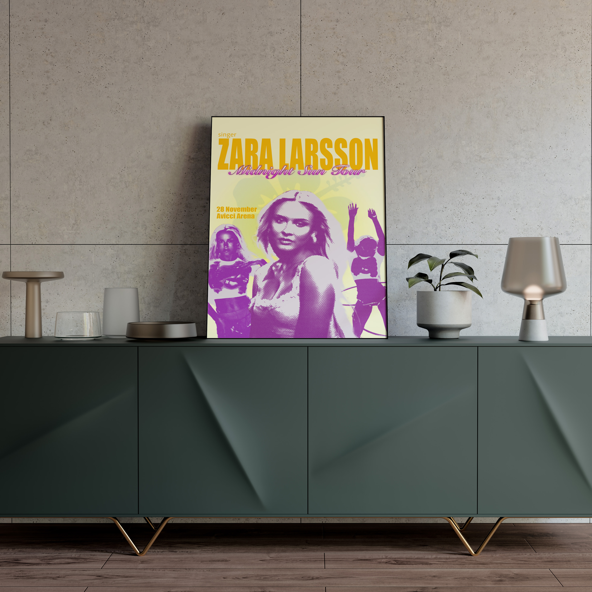
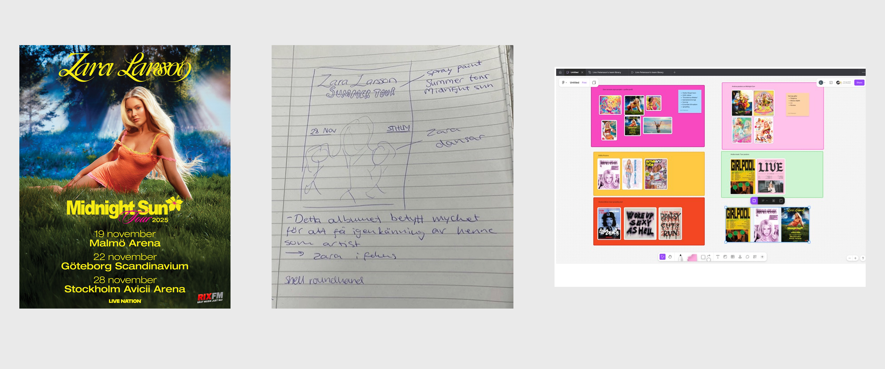
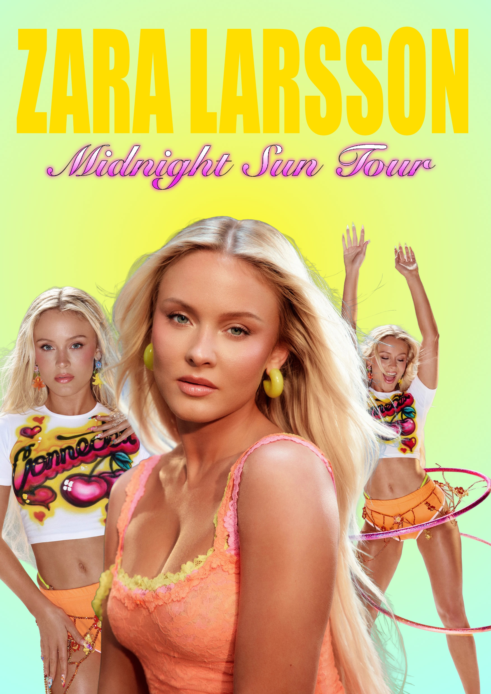
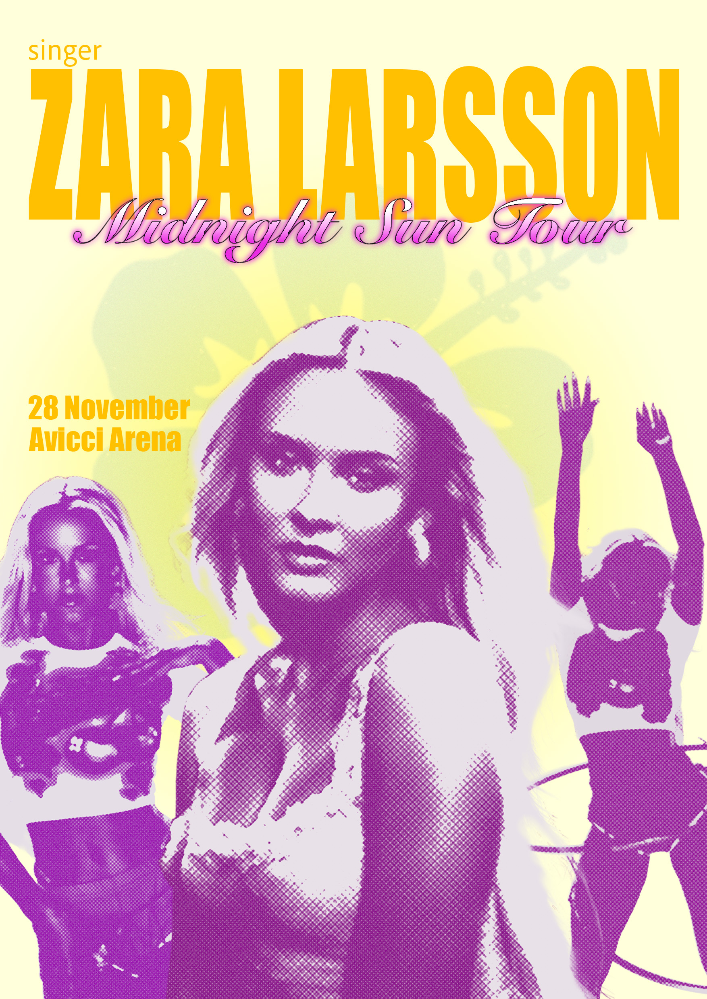

Midnight Sun Poster
A tour poster for Zara Larssons Midnight Sun Tour

Year
2026
Timeframe
1 Week
My Role
Solo designer
Tools
Photoshop
Project overview
Midnight Sun Tour is a concert poster designed as a personal interpretation of Zara Larsson's official tour material. The project explores how visual design can communicate an artist's identity and brand through color, typography, and composition alone, without relying on text to convey meaning.
The poster is built around Larsson's established visual identity, drawing on her strong association with early 2000s aesthetics, neon colors, and a bold summery style. Design decisions around palette, typeface, and imagery were all made with her persona in mind, either directly inspired by her own material or interpreted through her visual language.
The project involved studying a range of reference material, including Larsson's own posters, fan-made work, and concert posters by artists such as Britney Spears and Girlpool. Iteration focused primarily on color grading, filters, and texture to achieve the right aesthetic feel, while the overall composition remained close to the initial sketch.
The final result is a balanced, visually driven poster that captures Larsson's summer and Y2K aesthetic and demonstrates how deliberate design choices in color, hierarchy, and layout can create immediate recognition and emotional connection with a target audience.



My design process
An overview of my design process

Research + Sketches
Reference gathering focused on existing concert posters and Larsson's own visual identity. Key references included her official tour material, fan-made posters, and posters by Britney Spears and Girlpool, selected for their shared aesthetic and compositional similarities. Research also covered Larsson's broader visual brand across social media, clothing, and promotional imagery to identify recurring elements such as color palette, Y2K styling, and iconography.
Initial sketches were developed early in the process and remained close to the final composition, establishing the three-image layout and text placement from the start. Iteration focused less on restructuring the layout and more on refining color, texture, and filter choices, exploring how to best translate Larsson's visual identity into the poster's overall feel.


Wireframes + Iterations
The design process was driven by a clear creative vision from the start, with the overall composition staying consistent throughout. Rather than exploring multiple directions, iteration happened within a single working file, continuously refining color, texture, layering, and detail rather than restructuring the layout.
One earlier version was saved, reflecting a simpler iteration of the final composition with fewer layers and adjustments. While this focused approach allowed for deep refinement of a single direction, it also meant limited ability to backtrack if a fundamental design decision needed to be reconsidered, a tradeoff worth noting when reflecting on the process.


Final Design
The final poster successfully captures Larsson's visual identity through a cohesive combination of color, typography, and image composition. A bold yellow, pink, and blue palette rendered in RGB preserves the neon intensity central to her brand, while the three images of Larsson anchor the layout and ensure immediate recognition without relying on text.
Typography is layered to create clear hierarchy, a heavy, oversized wordmark contrasted against an italic, spray-paint-inspired tour name that nods to Y2K aesthetics. The composition achieves asymmetric balance, with image placement and text working together to distribute visual weight across the poster.
The result is a visually driven design that communicates both the artist's identity and the summer, Y2K feel of the Midnight Sun Tour, standing out both digitally and in print.
